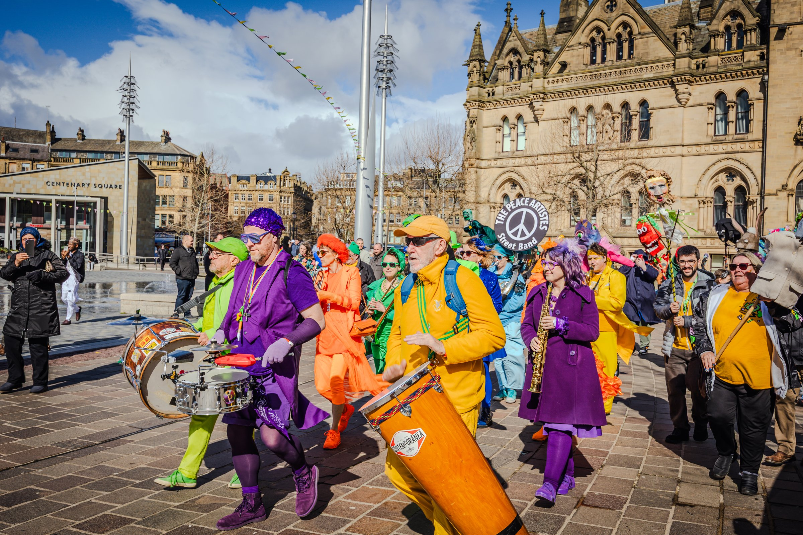
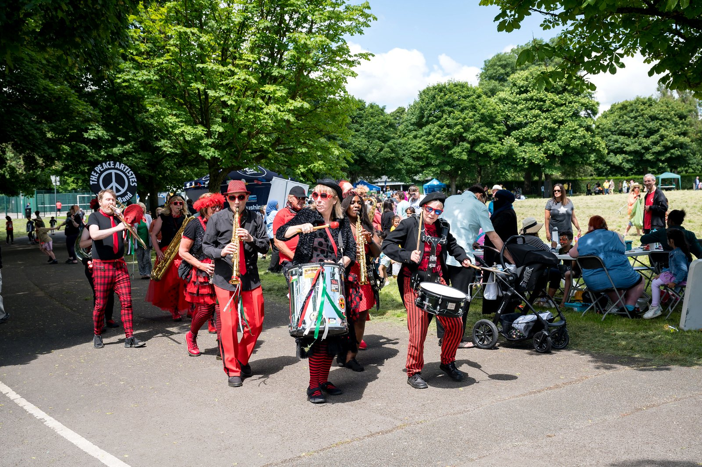
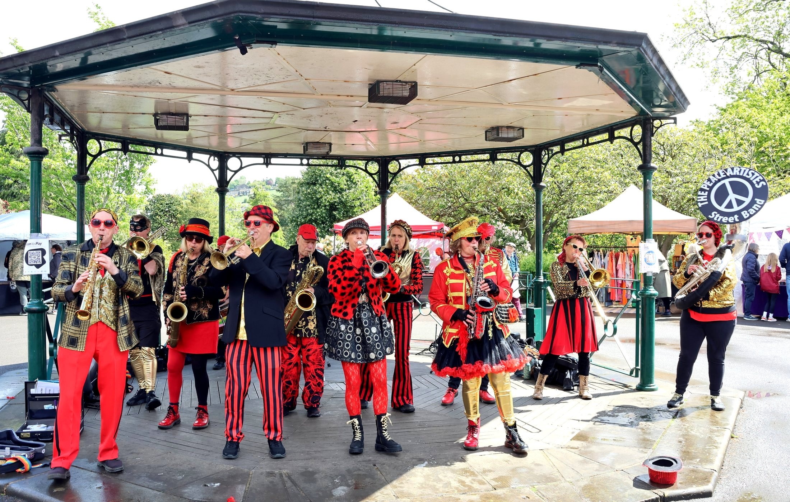
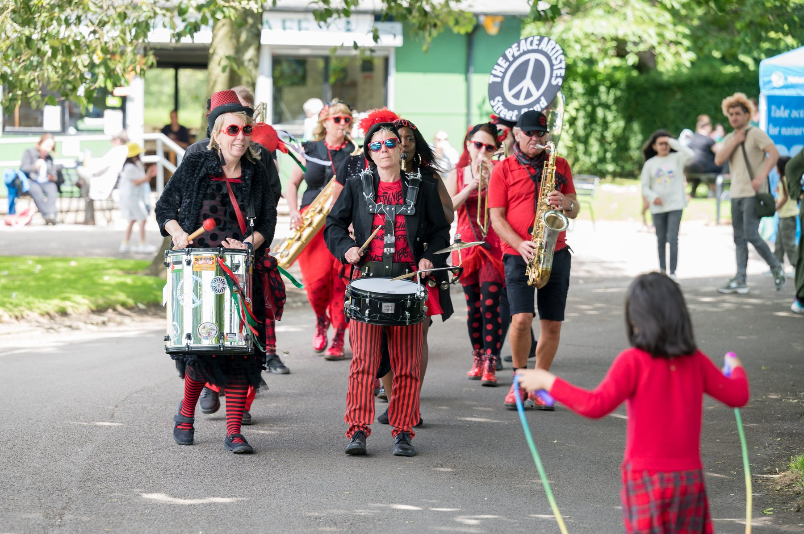
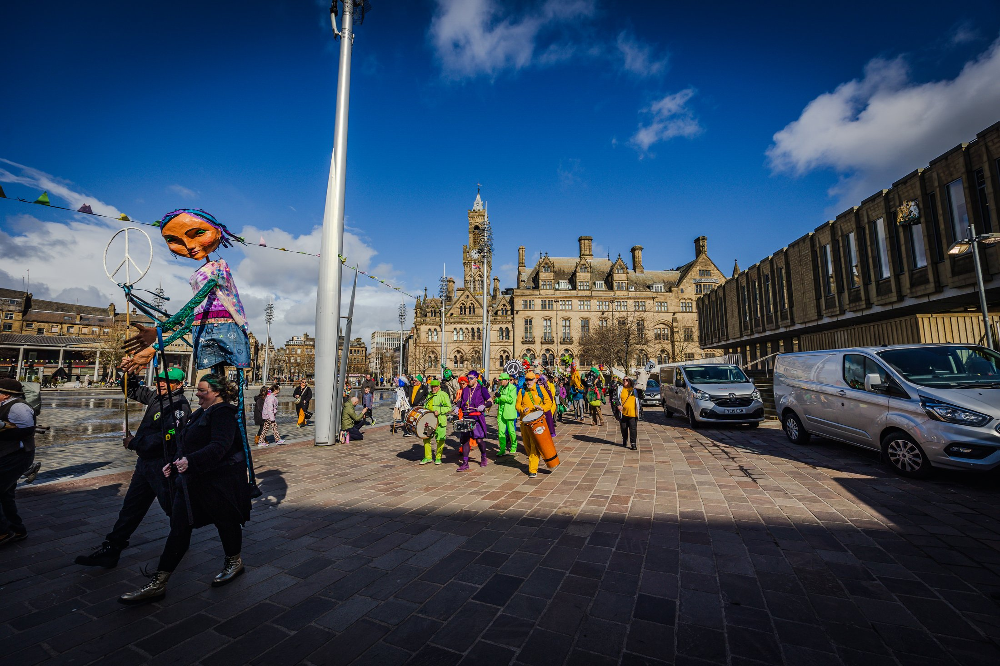

Brass, saxes, drums and colour for festivals, weddings, processions & parties.

Those wonderful Peace Artistes. There are too many and they are too loud!— Archbishop Desmond Tutu
Bradford to the bone
A band you hear before you see.
Since 1986 The Peace Artistes have been the carnival heart of West Yorkshire — a brass, sax and drums street band born out of CND marches and refusing to slow down since. We've played festivals, weddings, funerals, demos, conferences and one or two surprise birthdays.



